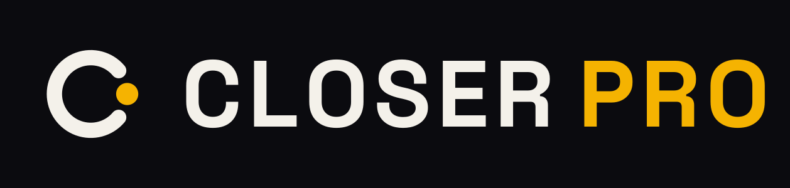
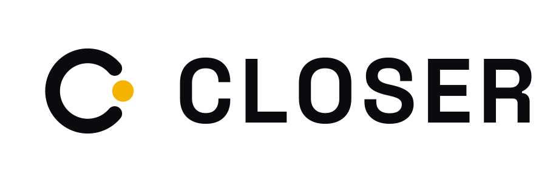
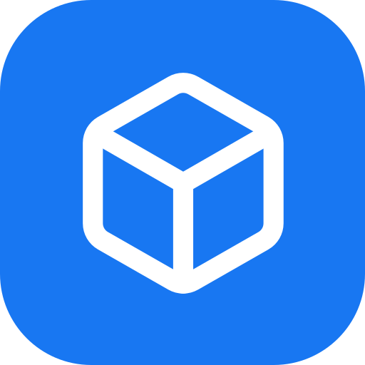

Guide de marque · v1

Reste sur la ligne.
Close plus.
CLOSER PRO écoute chacun de tes appels de prospection et te dit, avec la méthode Straight Line, exactement quoi changer pour décrocher plus de rendez-vous.
Un nom, une promesse, une attitude.
« Closer », c'est celui qui conclut. « Pro », c'est le niveau qu'on vise : un outil sérieux, pour ceux qui vivent de leurs appels. CLOSER PRO ne te promet pas de parler mieux, il te promet de conclure plus. Le nom fonctionne en français comme en anglais.
Transformer chaque appel, même raté, en leçon concrète. Pas de théorie : une note, une erreur, la phrase à dire la prochaine fois.
La Straight Line de Jordan Belfort : l'appel est une ligne droite entre l'ouverture et le close. Ton travail est de garder le contrôle et de ramener le prospect sur la ligne.
« Chaque appel compte. Même celui où on te raccroche au nez. »
Le symbole est un C ouvert : la conversation, la boucle des objections. Le point or vient la refermer : c'est le close. Le logotype est en Space Grotesk Bold, légèrement espacé, avec « PRO » dans l'or du point.



Un noir profond, un ivoire chaleureux et un or réservé à ce qui compte : l'action, le close, la priorité. Règle d'or : l'or ne dépasse jamais 10 % d'un écran.
#0B0B0F#16171D#2A2D38#F4F1EA#F5B301#22C55E · score ≥ 75#F59E0B · 50 à 74#EF4444 · < 50Deux polices gratuites (Google Fonts). Space Grotesk pour les titres et les chiffres, Inter pour tout le reste.
Aa 87
Titres, scores, logotype. Géométrique et direct, comme une ligne droite.
Garde le contrôle, ramène le prospect sur la ligne.
Textes, conseils, interface. Ultra lisible sur téléphone.
CLOSER PRO parle comme un coach exigeant qui croit en toi. Il tutoie, va droit au but et donne toujours la phrase à dire.
Les briques qu'on retrouve partout dans l'app.
Une fine ligne or qui part d'un titre et s'efface vers la droite. Elle rappelle la méthode sans la surligner.
Tous les fichiers sont dans le dossier public/brand du projet.